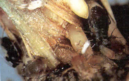

| Home |
| FINGER MILLET |
| 1. Pink stem borer |
| 2. white borer |
| 3. root aphid |
| 4. cut worm |
| 5. white grub |
| 6. flea beetle |
| 7. earhead caterpiller |
| Questions |
| Download Notes |
PESTS OF FINGER MILLET :: Major Pests :: Root Aphid
3. Root aphid: Tetraneura nigriabdominalisi (Aphididae: Hemiptera)
Damage symptoms: Aphid remains at the base of the plant and suck the sap. The infested plants turn pale yellow and become stunted. Wilting and drying of plants in patches is the typical symptom. Black ants attend them for honeydew and their presence confirm the root aphid attack. It occurs on many grasses too.
Bionomics: The aphids are pinkish and globular. It reproduces viviparously. They have 4 nymphal instars with a total nymphal duration of 7-9 days. Adult lives for 5-11 days and produces 10-35 off springs.
|
 |
 |